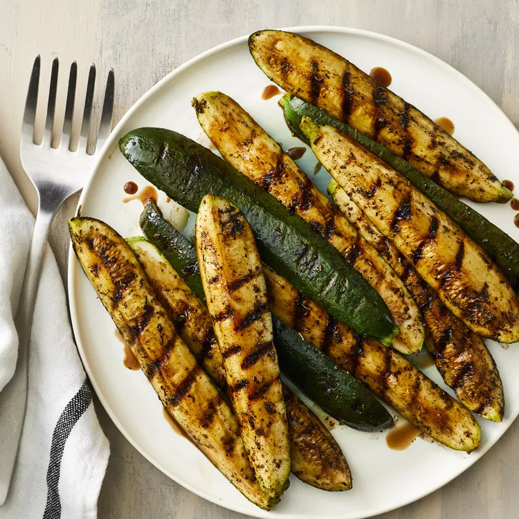

Balsamic Grilled Zucchini
A simple grilled zucchini recipe with a touch of balsamic vinegar, garlic, and Italian seasoning.

Ingredients
- 2 zucchinis, quartered lengthwise
- 2 teaspoons olive oil
- 1 teaspoon Italian seasoning
- ½ teaspoon garlic powder
- 1 pinch salt
- 2 tablespoons balsamic vinegar
Directions
- Preheat an outdoor grill for medium-low heat and lightly oil the grate.
- Brush zucchini with olive oil. Sprinkle Italian seasoning, garlic powder, and salt over zucchini.
- Cook on the preheated grill until beginning to brown, 3 to 4 minutes per side. Brush balsamic vinegar over zucchini and continue cooking 1 minute more. Serve immediately.